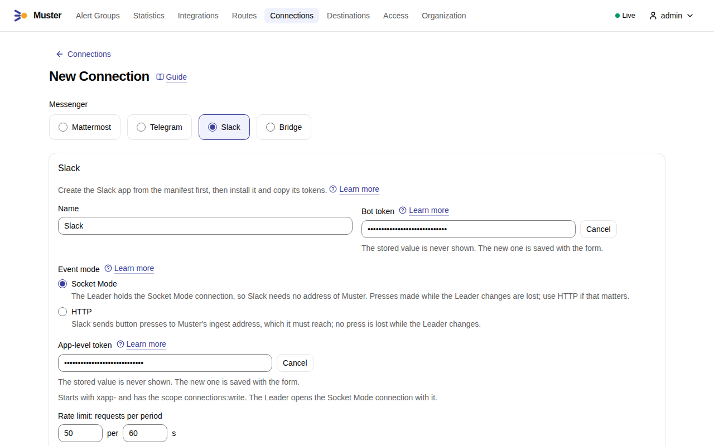
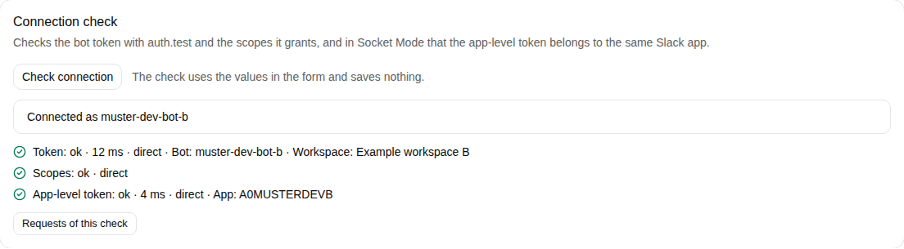
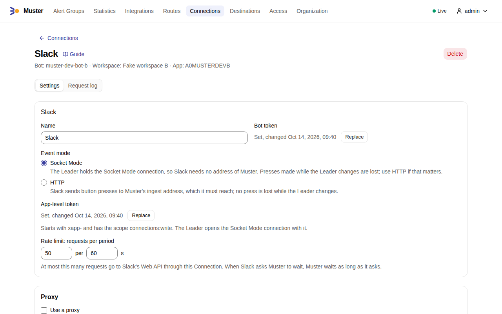
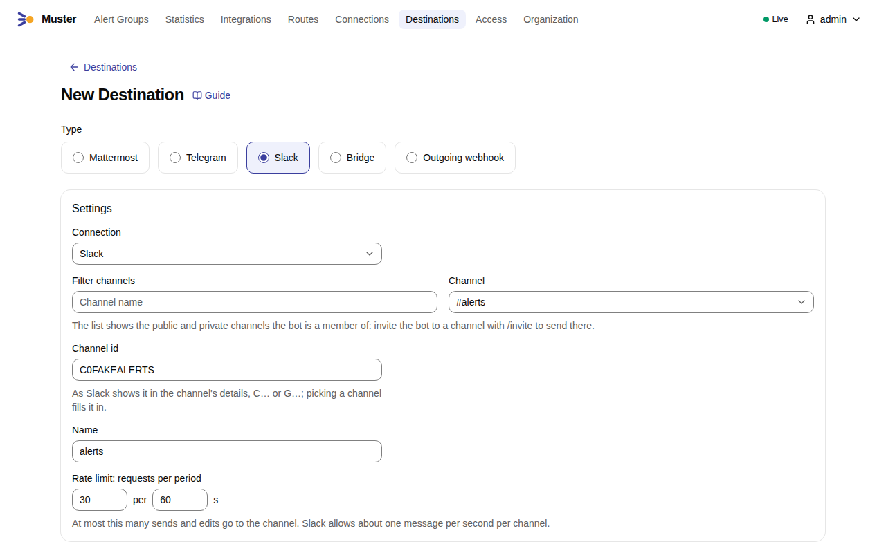
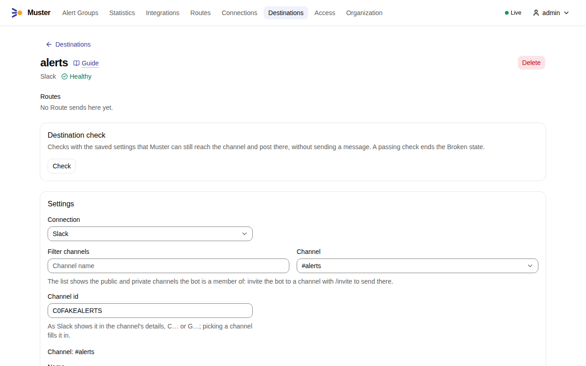
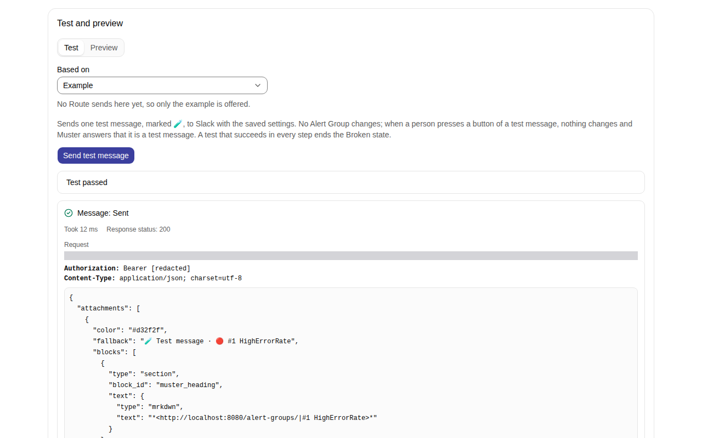

Connect Slack¶
Muster posts to Slack through the Web API with the bot of a Slack app that you create from a manifest and install in your workspace: one message per Alert Group, the Root message, which Muster edits as the Alert Group changes, and replies in its Thread for what happens later. People act on the Alert Group with the buttons of the message and its Snooze… menu. Muster uses no incoming webhook, no Events API subscription and no user token.
In the examples, MUSTER_PUBLIC_URL is https://muster.example.org and MUSTER_INGEST_URL is
https://ingest.muster.example.org.
Socket Mode or HTTP¶
A button press reaches Muster in one of two event modes, set on the Connection (connection.slack.event_mode).
Choose before you create the app, because the app's manifest differs.
- Socket Mode
- The Leader holds a WebSocket connection to Slack, so Slack needs no address of Muster: Muster only calls out. It is the way when Muster has no address that Slack can reach. It needs the app-level token. Only the Leader holds the socket, so a press made while the Leader changes is lost: the person sees Slack's error, and Muster does not count on Slack to send it again. A handover takes well under a minute; see High availability.
- HTTP
-
Slack posts every press to the Connection's callback address, which the Connection page shows:
https://ingest.muster.example.org/api/v1/callbacks/slack/CN…Slack must reach this address over HTTPS. Any replica receives the press, so no press is lost while the Leader changes. It needs the app's Slack signing secret: Muster verifies the signature of every press with it, and refuses a request whose timestamp is further than
slack.request_tolerance(5 minutes) from its own clock, so keep the clocks of Muster's nodes right. A request with a wrong or missing signature, a stale timestamp, an unknown Connection or a Connection in Socket Mode is answered401with the same body, which reveals nothing about which Connections exist; a body over 1 MiB, or one without apayload, is answered400.If Slack is the only client outside your network that reaches the ingest listener, expose only
/api/v1/callbacks/on the address Slack reaches, for example with a reverse proxy that forwards that path alone to the ingest port.MUSTER_INGEST_URLis also the address of Alertmanagers and Heartbeats: when they come from outside too, publish their paths as well, or give Slack's callbacks a route of their own. See The two public addresses.
A Slack app sends its presses to the sockets alone while its Socket Mode is on, and over HTTP alone while it is off, so the app and the Connection must agree: a Connection receives presses only in its own mode.
One Slack app per Connection¶
Slack hands each press to any one of the app's open socket connections, and Muster binds a press to a Destination of the Connection that receives it. Two Connections on one Slack app, in one Muster or in two, would therefore share its presses at random, and a press that reaches the wrong Connection is refused as "This button could not be verified". Over HTTP an app has one Request URL, so it serves one Connection. Create a Slack app for each Connection, a test copy of Muster included.
Muster notices it. When Slack tells the Leader that the app has more socket connections than the Leader holds, another
program is connected to the same app, usually a second Connection or Muster, or a script: the Check connection of a
Connection in Socket Mode passes with the warning another_client_connected, the Connection page shows the same
warning, muster doctor prints a WARN line, and the Leader logs
slack_socket_shared. Presses go on working, but some of them are
lost to the other program. Muster takes the count at each hello: when a socket reconnects, at the planned refresh
hours after the previous one, and when the Connection is saved with a change, which restarts its socket at once. So the
warning can stay for hours after its cause is gone; to clear it, save the Connection with its app-level token entered
again. How long Slack counts the connection of a Leader that crashed has not been verified.
Create the app from a manifest¶
- Open Your Apps in Slack, select Create New App → From a manifest, choose the workspace and paste one of the manifests below, in YAML.
- Check the summary Slack shows and create the app.
The manifest for Socket Mode¶
display_information:
name: Muster
description: Muster alert groups
features:
app_home:
home_tab_enabled: false
messages_tab_enabled: true
messages_tab_read_only_enabled: true
bot_user:
display_name: Muster
oauth_config:
scopes:
bot:
- chat:write
- channels:read
- groups:read
- im:write
- users:read
- users:read.email
settings:
interactivity:
is_enabled: true
org_deploy_enabled: false
socket_mode_enabled: true
token_rotation_enabled: false
The manifest for HTTP¶
It differs from the first in the Interactivity Request URL, the callback address of the Connection, and in Socket Mode, which is off:
display_information:
name: Muster
description: Muster alert groups
features:
app_home:
home_tab_enabled: false
messages_tab_enabled: true
messages_tab_read_only_enabled: true
bot_user:
display_name: Muster
oauth_config:
scopes:
bot:
- chat:write
- channels:read
- groups:read
- im:write
- users:read
- users:read.email
settings:
interactivity:
is_enabled: true
request_url: https://ingest.muster.example.org/api/v1/callbacks/slack/CNAGK7M3QX9P2R
org_deploy_enabled: false
socket_mode_enabled: false
token_rotation_enabled: false
The Connection page shows its callback address only once the Connection is saved, and saving it needs the bot token of the installed app. Create the app with the address above, create the Connection, then copy its callback address into Interactivity & Shortcuts → Request URL of the app.
What the manifest sets¶
The app and its bot are named Muster. The bot posts under the name in the app's settings: Muster does not ask for
chat:write.customize, so a name that a message carries would be ignored. To use another name, change both names in
the manifest.
- The Messages tab is on and read-only
- Account links send a person a code by direct message from the bot, and the direct messages of an app show in its
Messages tab. Read-only means that the person reads the code and cannot write to the bot. Keep the tab on: Slack
documents that with it off it refuses the bot's direct message, and the request for a code then fails with the
problem
messages_tab_disabled(409), which has not been seen yet on a real workspace. A refused request still counts toward the limits of Account links, 5 requests an hour for a person and 3 for one Slack account (account_link.slack_code_requests), so after you turn the tab on again, a person who tried several times may have to wait up to an hour. Turn it on under App Home → Show Tabs → Messages Tab. See Link Slack. - The Home tab is off
- Muster publishes no Home tab.
- Interactivity is on
- Buttons and menus send nothing to Muster without it. Over HTTP it holds the Request URL.
- Socket Mode is on, or off for HTTP
- See Socket Mode or HTTP.
- Token rotation is off
- With rotation, the bot token expires and Slack issues a new one. Muster stores the token you enter and has no way to
renew it, so a rotating token ends as
token_expiredand every Destination of the Connection becomes Broken. - The app is not deployed to an organization
- One Connection serves one app in one workspace.
- There is no event subscription
- Muster does not use the Events API: it hears only the presses of buttons and menus.
The scopes¶
Muster needs these six bot scopes and no other. Check connection reads the scopes Slack grants the token and fails
with missing_scope, naming the missing ones.
chat:write- Posts, edits and deletes the bot's own messages, and answers the people who press its buttons.
channels:read- Reads a public channel to check a Destination, and lists the public channels the bot is a member of.
groups:read- The same for private channels.
im:write- Lets the bot open a direct chat with a person. The Connection check fails without it. The code of an Account link
is sent with
chat.postMessageto the person's user id, which needschat:write; whether Slack also needsim:writefor that has not been verified, so Muster keeps the scope. users:read- Finds a person by name for an Account link, and reads the app of the bot so that the check can tell whether both tokens belong to one app.
users:read.email- Finds a person by email for an Account link.
Muster never joins a channel on its own, so it asks for no channels:join: you invite the bot.
Install the app and create the tokens¶
- In the app's settings, open Install App and install it in the workspace. Slack then shows the Bot User OAuth
Token under OAuth & Permissions; it starts with
xoxb-. Copy it. Anyone with the token controls the bot. - In Socket Mode, open Basic Information → App-Level Tokens and generate a token with the scope
connections:write. It starts withxapp-. Copy it. Anyone with this token can open sockets of the app and take its presses. - Over HTTP, open Basic Information → App Credentials and copy the Signing Secret. Anyone with it can send Muster presses that pass the signature check.
Muster stores all three secrets encrypted, never shows them again and writes them to no log line.
Create the Connection¶
- In Muster, open Connections, select Create connection and choose Slack.
-
Enter a Name, choose the Event mode, and enter the Bot token and, in Socket Mode, the App-level token, or over HTTP the Slack signing secret, each after Set a value. A Slack Connection has no address field, since Slack's address is fixed.

-
Select Check connection. The check runs in steps and shows the latency of each and whether it went through the proxy:
- Token:
auth.testwith the bot token, which names the bot and the workspace and fails if the token is not a bot's; - Scopes: every scope of the manifest is granted;
- App-level token, in Socket Mode: the token belongs to the same app as the bot token, and Slack opens a connection for it. The check opens no WebSocket.

- Token:
-
Select Save. On the saved Connection, Check connection records the bot, the workspace and the app, which the page then names.

Over HTTP no request can show that Slack reaches the callback address or that the Slack signing secret is right, because a bot cannot press its own button. The first press does: see The test message.
Check connection also works in the form before anything is saved. It checks the values in the form and saves nothing, and no bot name is recorded. A stored token goes to Slack only through the saved proxy: after a change of the proxy, type the tokens again to check, or save first.
Invite the bot and create Destinations¶
A bot posts only to channels it is a member of. In Slack, invite the bot to each channel a Destination posts to, public or private:
/invite @Muster
In Muster, create a Destination of type Slack with the Connection and the channel:
- Open Destinations, select Create destination and choose Slack.
-
Choose the Connection and the Channel. The form lists the public and private channels the bot is a member of; for a channel that is not listed, type its id as Slack shows it in the channel's details,
C…orG…. A direct chat or a person cannot be a Destination. Give the Destination a Name.
-
Select Save, which runs the Destination check below. The saved Destination shows the channel's name.

-
Under Test and preview, on the tab Test, select Send test message: a message marked 🧪 appears in the channel. In the screenshot the request line, which names a development server, is hidden, and links start with
http://localhost:8080, the address of a development installation; yours start with yourMUSTER_PUBLIC_URL. See The test message.
Saving runs the Destination check, which asks Slack about the channel with conversations.info and refuses a
Destination that fails:
channel_not_found: no such channel, or a private channel the bot is not in;channel_archived: the channel is archived;bot_not_in_channel: "Invite the bot to the channel: /invite @{bot}", where{bot}is the bot's name as Slack reports it for the bot token, such asmuster.
The bot's name appears in that hint only after Check connection has run on the saved Connection; before that it says only "Invite the bot to the channel."
Check on the Destination page runs the same check at any time. When Slack refuses the bot later, for example because someone removed it from the channel, the Destination becomes Broken; Muster runs the check every few minutes while nothing waits for the Destination, and ends the Broken state once it passes again, for example after someone invites the bot back. See Broken Destinations.
Link accounts¶
A button acts as a Muster User, and a Mention reaches a person, only through an Account link. The person enters their
Slack email or name in their profile, and the bot sends a code by direct message, in the Messages tab of the app. The
code has 8 characters, is valid for 10 minutes and allows 5 attempts (account_link.slack_code). See Link
Slack.
Where answers to presses show¶
A successful press is not answered: the Root message changes. Whatever the person who pressed must read — that the press
was refused, that their Slack account is not linked to Muster yet, or that the button could not be verified — shows in
the channel as a message only they can see, marked "Only visible to you". Unlike Mattermost, Slack needs no permission
beyond chat:write for it. For a press on a Thread reply, such as a Reminder, the answer shows in the Thread. The one
success that is answered is "Still on it", which changes no message.
Slack does not guarantee such a message: the person must be active and in the channel. When Slack refuses it, Muster
sends the same text to the press's response_url, on hooks.slack.com; an answer that fails both ways is logged and
not tried again. Answers are in the language of the User the account is linked to, and in English for an account
without a link.
A replica handles at most 2 presses at a time (slack.parallel_presses); the others wait, already confirmed to Slack. A
press whose deadline ends while it waits for a slot, 30 seconds after it was handed over (slack.press_deadline), is
answered, in English, that it failed. At most 64 presses wait for a slot in a process (slack.max_waiting_presses): one
more, and a press still waiting or running at the end of the shutdown's grace period, fails without an answer and is
logged. None of these bounds is configurable.
Who gets notified¶
Slack cannot send a message without a notification: whom a new message notifies depends on each member's settings for the channel and the Thread. So, as in Mattermost, Quiet means "without a Mention", not "nobody is notified".
- Edits are Quiet. An edit of the Root message carries no Mention, so a Loud change is always a new message: a new Root message, or a reply in the Thread. The edit drops the Mentions that the Root message had; Slack may then remove them from the person's list of mentions.
- Mentions are
@channeland@here, as the Destination's Mention settings ask, and the people chosen in them, through their Account links. A person without a link is named by their display name as text, which notifies nobody. A Slack Destination takes neither@allnor groups. The footer of a Root message — "Acknowledged by", "Snoozed by", "Resolved by" — writes a person with an Account link for the Connection as their Mention, which Slack shows as their name, in an edit as in a new message; a person without one is their display name as text. - Thread replies stay in the Thread: Muster never also broadcasts them to the channel.
- Alert data and template text never mention anyone. An
&,<or>in a label or an annotation is escaped, and so is@. A literal<!here>or<@U…>written in a template is shown as text and notifies nobody. Only the Destination's Mention settings,{{ mention "here" }}and its siblings, and linked people notify.
See Loud and Quiet.
Rate limits¶
Muster limits itself, and Slack limits it too.
connection.slack.limiter- 50 requests a minute for every call of the Connection to the Web API together, the minimum Slack documents for the methods that edit and delete.
destination.slack.limiter- 30 requests a minute for the sends and edits of a Destination together, half of Slack's "one message per second per channel".
Slack limits each method per app and workspace. When it answers 429, Muster holds every request of the Connection, for
any of its Destinations, for the seconds of Retry-After; this is not counted as a failed attempt, and does not make a
Destination Broken. A 429 without Retry-After counts as a transient failure. You can change both limiters.
Edits and deleted Root messages¶
Muster edits a Root message for as long as its Alert Group is open, which can be days. Slack lets a bot edit its own messages, and no edit window is known for them. Whether a window that your workspace sets applies to the messages of a bot, hours or days old, has not been verified; an edit that Slack refuses that way ends that delivery as Not delivered and does not make the Destination Broken.
When someone deletes a Root message, Muster finds out at its next edit, when Slack answers message_not_found. It
checks that the bot is still in the channel and the channel is not archived, and then posts the Alert Group again once,
Quietly, with a note. If the bot is gone or the channel archived, the Destination becomes Broken instead. A Root message
that already had replies stays in the channel as "This message was deleted." with its replies, and Muster's later
replies still go under it until the next edit finds it gone.
A Root message deleted before it had any reply takes no reply: Slack posts a reply to it into the channel, as an ordinary message, and answers as if it had worked. Muster notices, deletes that message at once and posts the Alert Group again. The reply may stay in the channel for a moment. If Slack refuses the deletion, Muster does not try again: the stray reply stays until someone deletes it, and the delivery records why.
The test message¶
Send test message on the Destination page posts one message marked "🧪 Test message", with the buttons of its status, and Preview shows the message as Muster would send it. No Alert Group changes.
A bot cannot press its own button in Slack, so the test message cannot prove that presses reach Muster, as Mattermost's does. Press a button of the test message yourself: Muster answers you "This is a test message; nothing was changed", even from an account without a link. That answer proves that presses reach Muster and, over HTTP, that the Slack signing secret is right.
The proxy¶
A Slack Connection has a proxy section like the others; see Proxies. The proxy must allow CONNECT to
slack.com; in Socket Mode also to the hosts under slack.com that the socket uses; and to hooks.slack.com, where
the fallback answers to presses go. Where only the proxy can resolve outside names and the Organization's outbound
address policy is strict, add slack.com and *.slack.com to Allowed: the domain entry covers hooks.slack.com
and the socket's hosts, but not slack.com itself. See Proxies.
Muster accepts a Socket Mode address only on slack.com or a host below it, and an answer address only on
hooks.slack.com. If the socket cannot open, the Leader backs off (slack.socket_backoff, from 1 second up to 5
minutes), logs slack_socket_failed, and does not make any
Destination Broken. It waits slack.hello_timeout, 10 seconds, for Slack's greeting on a new socket.
Request log¶
The Request log of a Slack Connection records its calls to the Web API named as Slack names them, such as
chat.postMessage and apps.connections.open. Over HTTP it records each press that reaches the callback address as
interactive, with Muster's answer, refused ones included. In Socket Mode it records each envelope that carries an
envelope id under the type of the envelope, with the socket's host as its address and Muster's confirmation as its
answer; the app subscribes to no events, so only interactive envelopes arrive. Slack's greetings, disconnects and
keep-alive frames are not recorded. The answers Muster sends to a press's response_url are recorded as response_url,
with the address masked: look there when an answer never shows. Tokens, the Slack signing secret and the signature are
masked, and so are the address of the socket, the response_url of a press, the signed ids of buttons and the code of
an Account link. See Request log.
Check from the command line¶
muster doctor prints one line per Slack Connection and per Slack Destination with the same checks, without sending
anything, and a WARN line for a Connection whose app another program shares.